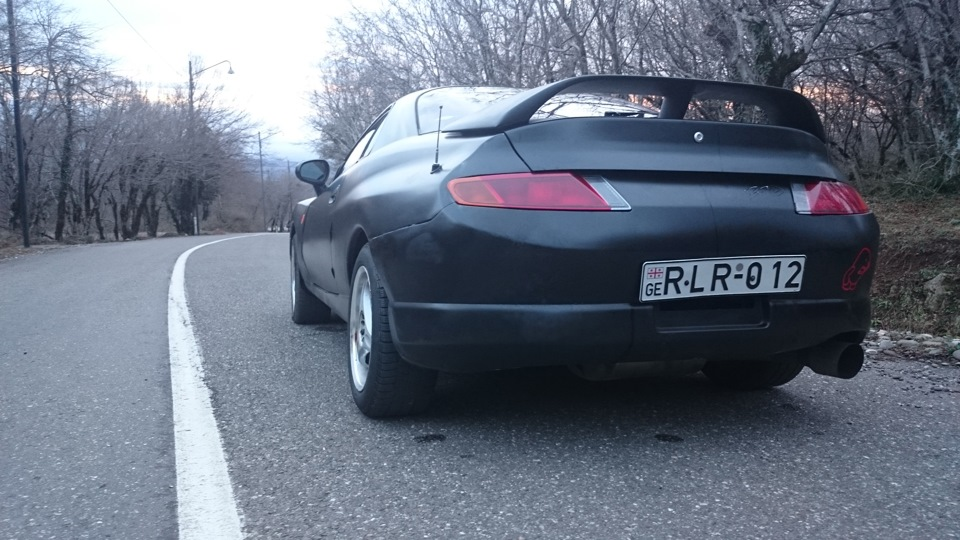

The Mitsubishi FTO – despite being the younger brother of the 3000GT/GTO – was a great car in its own right.
In fact, it was good enough to win the coveted 1994 Car of the Year award in Japan when it launched, originally as a JDM-only car.
Contemporary reviews praised the FTO’s combination of attractive styling, competent handling, and punchy performance, especially from the 2.0 V6 engine cars (and most notably the MIVEC-equipped cars, which were the most powerful options).
If you are on the market for a Japanese modern classic and want a quirky curious from the 1990s, then you could do far worse than the FTO.
But is the Mitsubishi FTO fast? In its heyday it was certainly a fairly quick car, at least in the V6 engined form. However, does the FTO hold up by modern standards?
In this edition of Car Facts we are going to look more closely at whether or not you can consider the FTO a fast car. If you’re on the market for a cool Japanese classic but you need something with a decent turn of pace, is the FTO going to satisfy? Let’s find out more.
For the purposes of this article, I’m going to assume you are looking at the V6 engined FTO. The 1.8 litre 4 cylinder is not particularly powerful, so don’t expect much in the way of 0-100 times, maybe around 9.5-10 seconds on a good day – which is definitely not quick by today’s standards. Most enthusiasts want to get their hands on a V6-powered FTO, ideally the top spec V6 that came equipped with MIVEC (a bit like Mitsubishi’s answer to VTEC).
MIVEC V6 FTOs came with about 200hp as standard. The 0-100kph/0-60mph time for the MIVEC V6 FTO was quoted at the time of launch by Mitsubishi as being 6.9 seconds. However, acceleration times are notoriously unreliable, as they are very dependent on the skill level of the testing driver, the road conditions at the time of testing etc. On FTO forums and owner sites we have seen some owners report 0-100 times of as low as 6.5 seconds, but the majority of reports are around 7-7.5 seconds. Considering that cars lose a bit of power with age and mileage, you could probably expect 7.5 seconds out of a decent MIVEC FTO these days, with anything under that a bonus. On a non-MIVEC V6, you could realistically expect around 7.5-8.5 seconds, depending once again on your ability to launch the car, road conditions and condition of the vehicle.
I’ve got a 2021 Suzuki Swift Sport with a 1.4 litre turbo engine. The Swift can do 0-100 in about 7.5 seconds, perhaps slightly faster if it is truly launched hard and driven by someone with more talent than myself (there are plenty of videos on YouTube with times closer to 7 seconds). Although the Swift is not the world’s best hot hatch, it’s a decent barometer for what would constitute a sufficiently quick car for the average person. In normal, everyday driving conditions it never feels less than adequately fast – and it’s fast enough that passengers will comment on it if you really put your foot down. A V6 FTO can keep up with, and probably even beat, a Swift Sport in a 0-100 dash. If the Swift Sport is a sufficiently fast car, then the FTO must be as well.
If you like my page please contact me:
contact
Kutaisi city
Balakhvani
Mr.Daviti